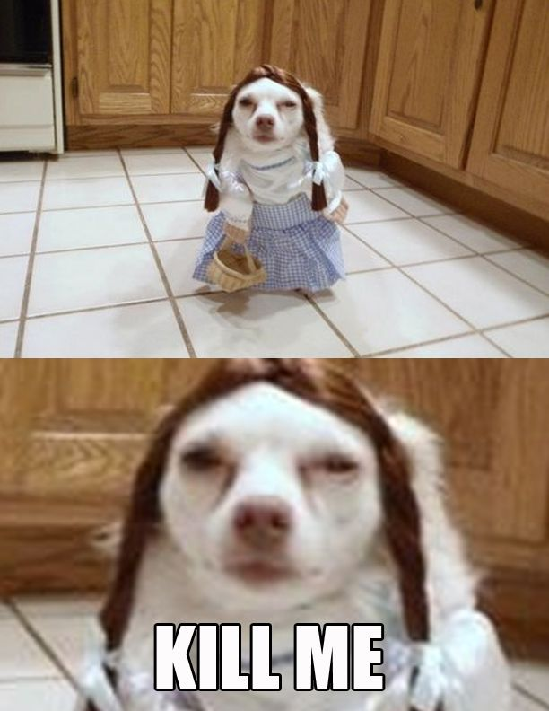
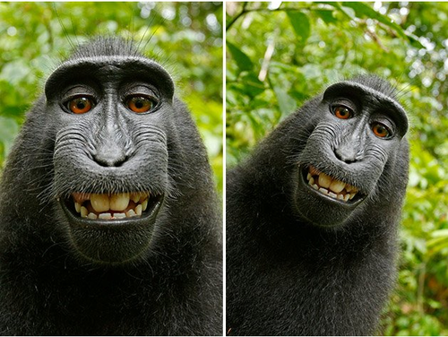
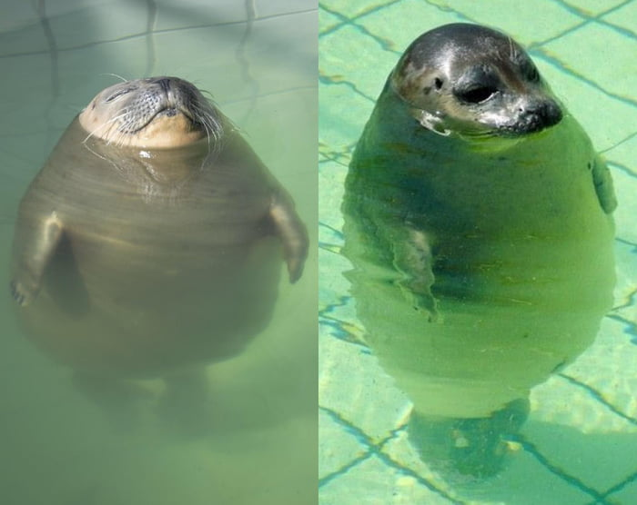
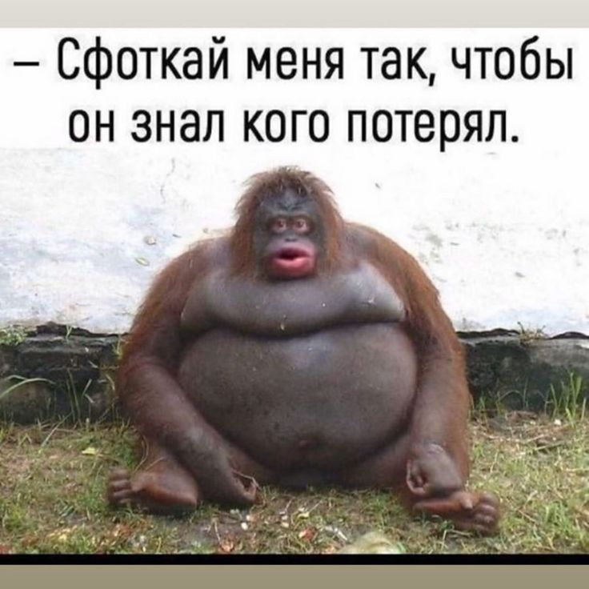
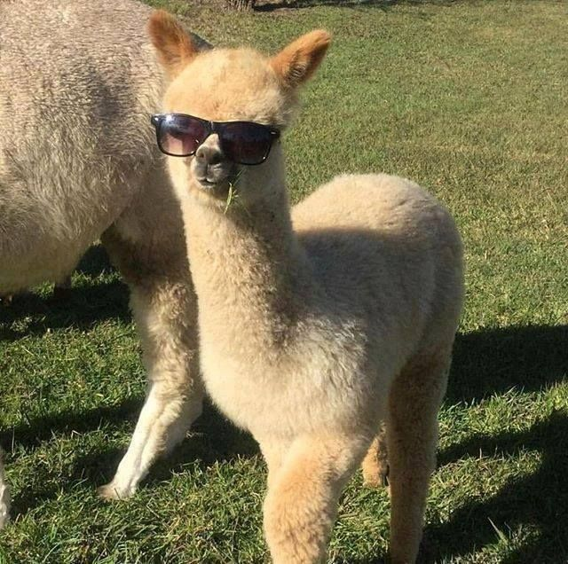

ТОП МЕМОВ
1. ДОГЕ Как прародитель всех мемных животных Значение: Доге вот уже много лет остается очень популярным мемом. Морда собаки, которая смотрит в камеру, выражая смесь подозрений, неодобрения и жалости, часто становится основой для фотожаб. С помощью цветных надписей, сопровождающих фотографию собаки, ей приписывают разные мысли и эмоции. Как правило, эти слова выражают сожаление, удивление, непонимание происходящего.

2. ГАРОЛЬД, СКРЫВАЮЩИЙ БОЛЬ Как самое известное лицо в мире мемов Значение: все фотографии с Гарольдом говорят сами за себя. На снимках мужчина улыбается, но улыбка его натянута, и кажется, что он совсем не счастлив. Мемы с Гарольдом передают похожие эмоции — когда человеку приходится притворяться радостным, хотя на самом деле ему грустно и больно.

3. ЛЯГУШОНОК ПЕПЕ Как самый противоречивый образ (на Западе — символ ненависти и расизма) Значение (первоначальное): лягушка Пепе часто используется с устоявшимся выражением «тебе никогда не узнать, как» выполнять какое-то действие. Иногда к картинке с лягушонком просто добавляют жизненную надпись о чем-то печальном. Обычно надписи на таких картинках носят саркастический характер.

БОНУС
    